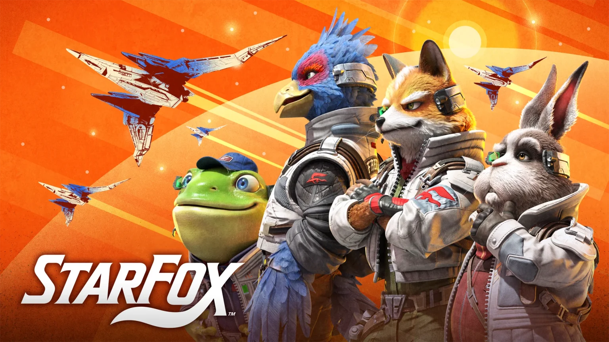

¿Alguien esta tan emocionado como yo por el nuevo Star Fox?
Desde la Wii U no tenemos un nuevo Star Fox y ahora al fin tenemos algo nuevo. Aunque sea un Remake, es mejor que no tener nada. Luego de la Pelicula de SuperMario estoy aun mas emocionado por ver mas de ellos.